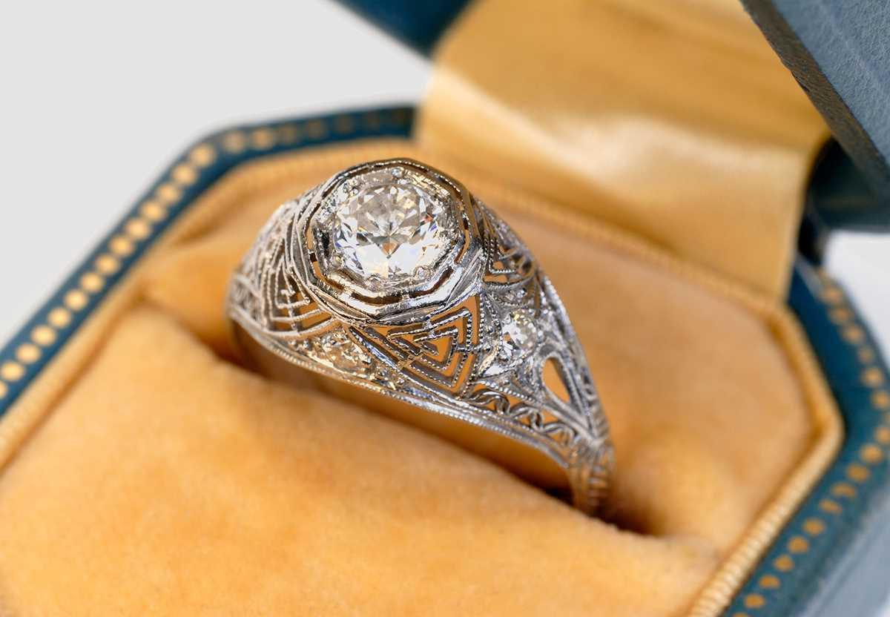
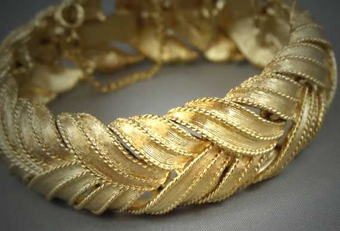

h1 Services
h2 Bijoux d'occasion
h3 Achat de l'or
Bien comprendre la juste valeur marchande d’un bijou de seconde main
À La Boîte à Bijoux, nous offrons sur place un service d’analyse et d’évaluation à la fine pointe de la technologie. Ce service spécialisé vous permettra de bien comprendre la juste valeur marchande d’un bijou, que vous soyez acheteur ou vendeur.

Achat de l’or
À La Boîte à Bijoux, après évaluation par un de nos experts, si vos bijoux en or sont endommagés et malheureusement pas réparables pour un coût raisonnable par rapport à leurs valeurs sur le marché, nous pourrions vous proposer de les racheter à la valeur du métal.
